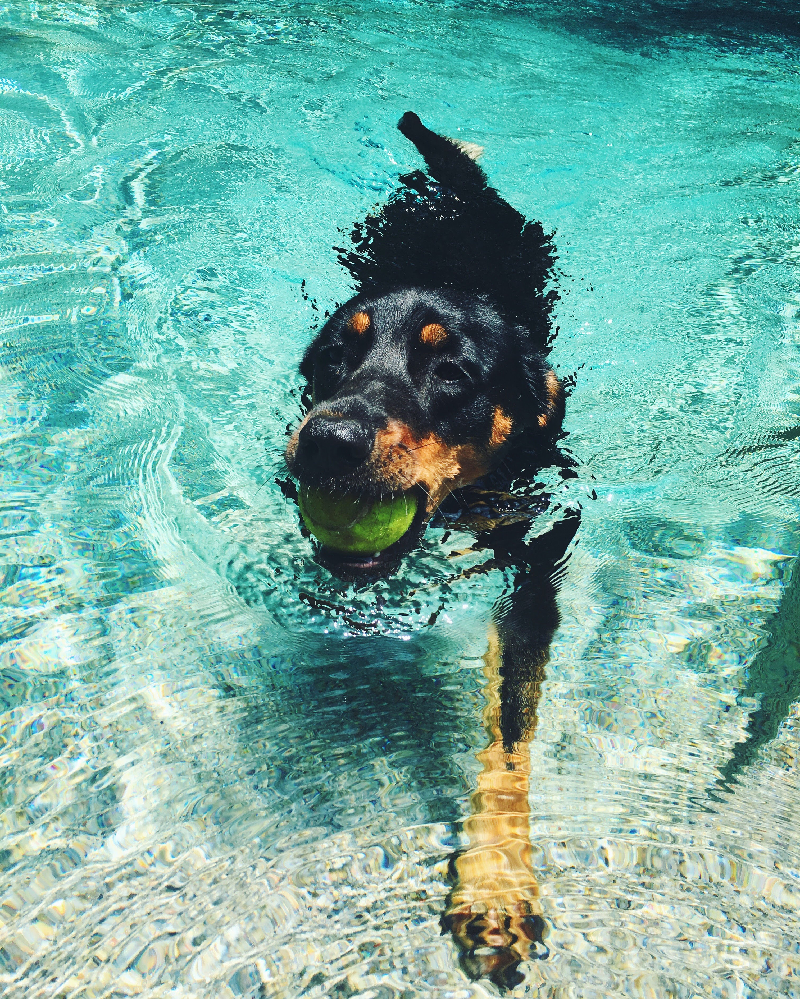

| Bailey | Story |
|---|---|
|  | I hope you have liked learning about Bailey! She is such an awesome dog. This picture on this page is of her swimming in our pool in the backyard. We will find her swimming there alone because she loves the pool so much! She will even lay out in the sun without running away or chasing anyone. My neigbors always laugh because she seems just like a human. |